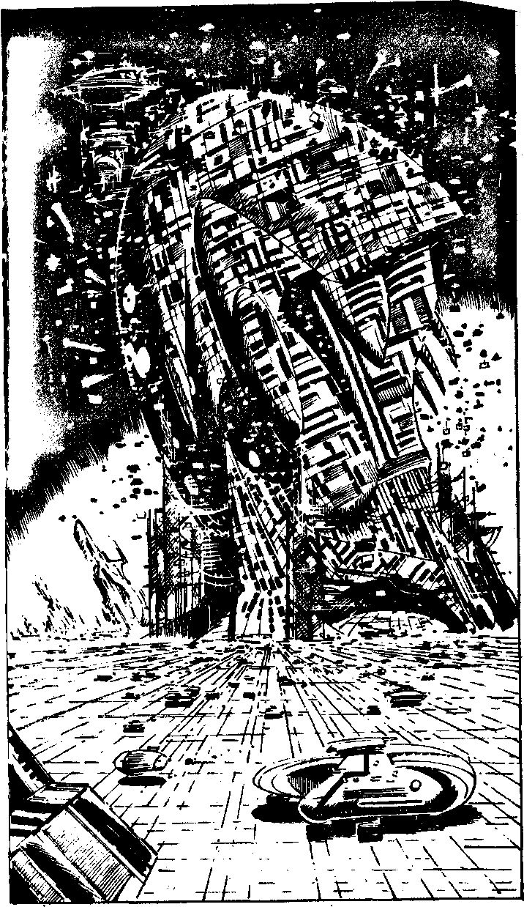

75
Your crash couch swivels and slides back into position and the Flyer cockpit seals. You press the launch button and the launch doors fly apart as you are hurtled out of Falcon's Wing. Waiting until you are far enough away from Falcon's Wing to avoid causing exhaust damage, you cut in the Flyer's Ion Drive and accelerate to Mach 3. You curve in a gentle arc towards the fluorescent building and as you pass out from behind a huge iron cooling tower an incredible sight meets your gaze. A spaceship almost as large as one of the generation starships of the 24th century is being dismantled on a huge brass landing field. As you fly over it you see a contraption which can only be an enlarged variac drive being hoisted out of its front end. It takes a few seconds for you to realise what has been happening. The factory droids must have manufactured this colossal Time Machine in hours! Hundreds of them hover about it. They must have planned to invade the Eiger Vault with this machine on Earth, 3033 AD. Now that you have destroyed the Polybdenum and the Timehole on Thrix has closed, Yelov must have altered his plans. As you streak onwards a daunting vista opens up beneath you. It is Mechanon's space launch field, and it is packed with an interstellar warfleet the size of which defies belief. Row upon row of Interceptors, Ion-drive Battle Cruisers and Atmospheric Fighter-carrying mother-ships glow a burnished bronze beneath the dull red sky. Turn to 133.
Turn to 133